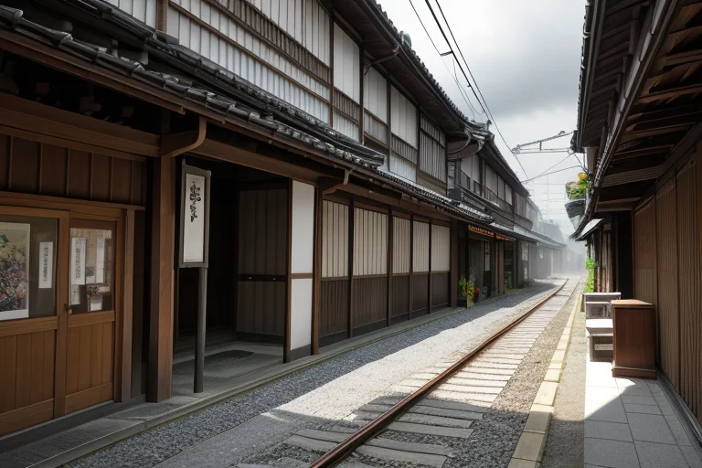
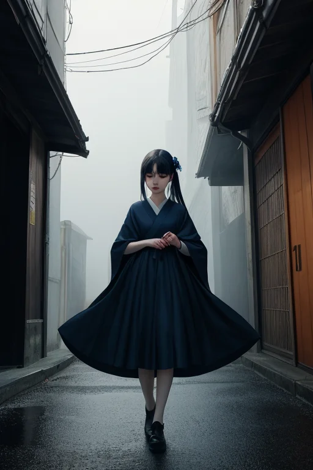
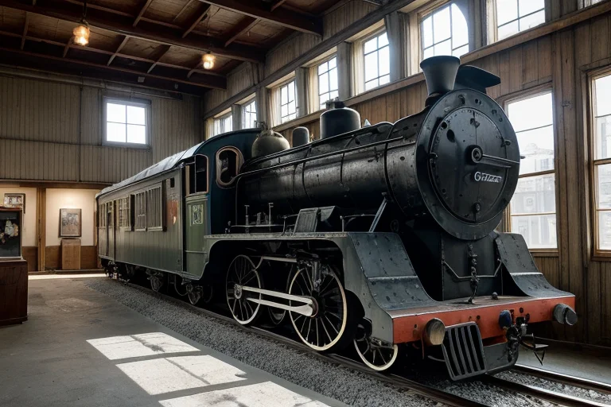
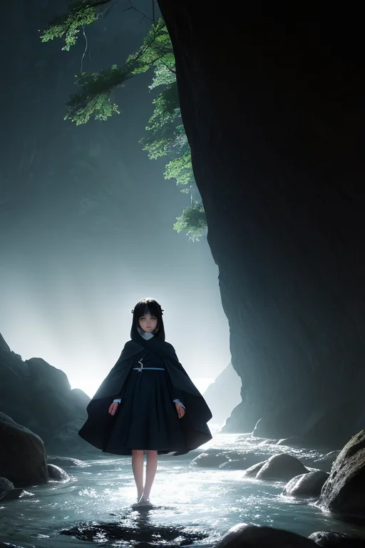
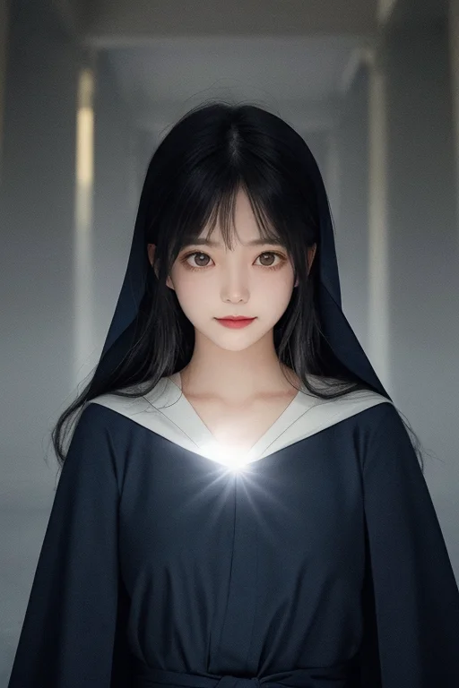

第一章「現実の埼玉」
あなたはまだ気づいていない。この土地にも、王がいることを。
川越小江戸の蔵造りの街並みは、観光客のざわめきに包まれている。土産物屋の店先には草加煎餅が並び、甘い香りが漂う。しかし、その喧噪のすぐ隣、路地の奥に差し込む午後の日差しが作り出す深い影の中に、彼は立っていた。サイタマル・アンブラ、影の王。濃紺の外套は周囲の陰に溶け込み、銀の細い光が袖口で微かに揺れるだけだ。
彼の王国、サイタマル・アンブラは「封印線」にある。武蔵国の中心として、また明治期の秩父事件のような民衆の鬱屈が蓄積されたこの地は、巨大都市・東京の圧力を受け続ける緩衝地帯だ。王の役目は、その圧力による地殻の「歪み」を、目立たぬように微調整すること。鉄道博物館の展示車両の軋み一つ、秩父神社の古木の梢の揺れ一つが、彼には都市の重みの伝わり方として読める。
「アンブラル」
王が低声で呼ぶと、足元の影がわずかに濃くなった。主席妖精が応じた証だ。彼らは決して災害を消せない。ただ、来るべき揺れを一段階軽くし、逃げる時間を数秒だけ引き延ばす。それが、封印されたこの地の王の、地味で芯のある務めであった。

第二章 歪みの兆候
川越小江戸の蔵造りの街並みに、いつもより深い影が落ちていた。サイタマル・アンブラは、観光客のざわめきを背に、路地の軒下に佇む。足元の自らの影が、微かに、しかし明らかに不自然な動きを見せている。アンブラルが警告を発しているのだ。
「王、圧が増しています」
影からかすかな声が響く。都市の膨張、無数の生活の営み、それらが蓄積する「重み」が、この土地の下で静かに共鳴し始めている。それは物理的な歪み以上のものだ。人々の「日常」そのものの密度が、時に優しく、時に残酷に地殻を押す。長瀞の岩畳を流れる荒川の水音でさえ、今日はどこか淀んで聞こえる。
彼は目を閉じ、感覚を研ぎ澄ませる。草加煎餅を焼くかすかな焦げる匂い、秩父の祭り囃子の遠い残響、十万石饅頭の甘い蒸気――それら無数の日常の断片が、見えない圧力として降り積もる。封印はまだ持っている。だが、その表面に、ごく細かい、銀の光線のような亀裂が走り始めているのを感じた。平凡の裏側で、何かが目覚めようとしている。

第三章 王の葛藤
鉄道博物館の静かな展示室。歴代の車両が影の中に佇み、サイタマル・アンブラはその前に立っていた。彼の手には、かつてこの地を走った蒸気機関車の小さな部品が握られていた。冷たい金属の感触が、彼の内側で揺れる熱を伝えていた。
解放せよ、と影が囁く。封印を解き、この圧力を一気にはねのけよ、と。それは確かに可能だ。彼の力は、日常の影に溶け込む微調整だけではない。封印の下には、秩父事件の夜のように、抗う力が眠っている。
しかし、彼は目を閉じる。狭山茶の畑が穏やかな緑の波を打つ風景、蔵造りの町並みを歩く人々の何気ない笑い声。彼が解放すれば、それらは一瞬で色を失うだろう。力は常に代償を伴う。武蔵国の中心として歴史を見つめてきたこの地は、彼に教えた。誇りとは、力の行使ではなく、その自制にある。
「……まだ、だ」彼は呟き、部品をそっと元の場所に戻した。銀の亀裂は確かに広がっている。だが、彼はまだ、この平凡な日常の影を、守り抜く道を探す。

第四章 妖精との対話
鉄道博物館の巨大な車両の陰で、アンブラルが微かに揺れた。その声は、古いレールの軋みのようだった。「王よ、この封印は、我々自身のためでもありました」
影は、長瀞の岩畳を流れる荒川の水のように、記憶を語り始める。明治十七年、秩父。自由を求める農民の怒りは、山々を震わせた。その感情の奔流、その「歪み」は、この地の王に初めての「怒り」という感情を芽生えさせた。彼はその怒りに共鳴し、力を解放しかけた。影が大地を覆い、全てを闇に沈めんとした瞬間。
「しかし、王は自らを縛りました」アンブラルは続ける。「力の行使は、この地の『日常』そのものを消し去ると悟ったからです。祭り囃子も、草加煎餅を焼く匂いも、十万石饅頭の甘さも、全ては平凡な日常の上にしか存在しない。その裏にあるのは、破壊ではなく……守るべき『当たり前』の積み重なりなのです」
王は黙って聞いた。自らの内なる銀の亀裂は、封印された感情の名残りだった。誇りは、時に最も重い枷となる。

第五章 微調整と余韻
サイタマル・アンブラは、自らの内側に手を伸ばした。銀の亀裂を、影の糸で静かに縫い合わせる。それは力の封印の修復であり、自らの誇りという感情の再封印でもあった。川越の蔵造りの街並みを、仄かな影がそっと撫でる。歪みの微調整は続く。地震の初期微動を一秒遅らせ、長瀞の岩畳を流れる荒川の水圧をほんの少し分散させる。全ては、目立たない実務として。
彼が調整するのは物理的な歪みだけではない。秩父神社の祭礼でほころぶ笑顔の偶然。鉄道博物館で少年が目を輝かせる瞬間の確率。狭山茶の畑に差す朝日の角度。それら「日常」が紡がれる確率を、影はごくわずかに補正し続ける。代償は、自らが完全な「調整者」に戻ること。感情のざわめきは、再び深い濃紺の底へと沈んでいく。
ただ、ほんの一瞬、草加煎餅の焼ける匂いが風に乗った時、彼の影が微かに震えた。誇りは消えない。封印されたまま、この地の平凡な日々を支える礎となる。
あなたの町にも、王がいる。